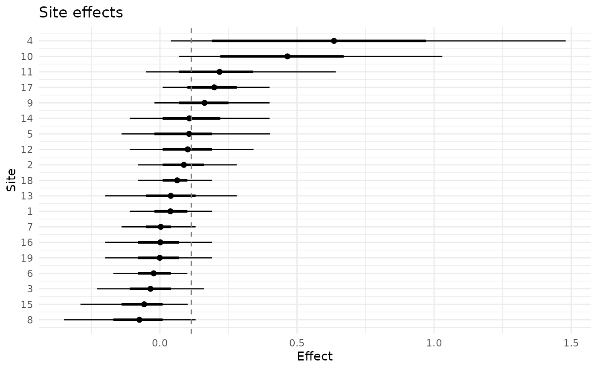
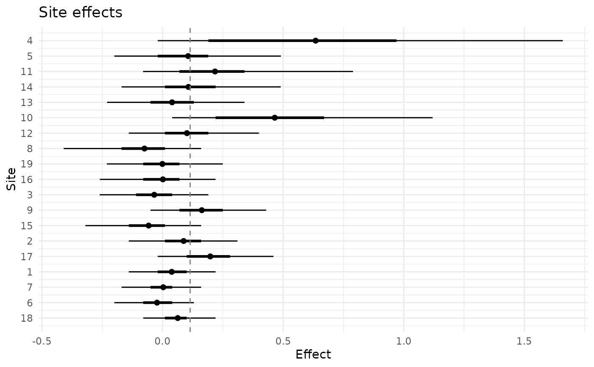
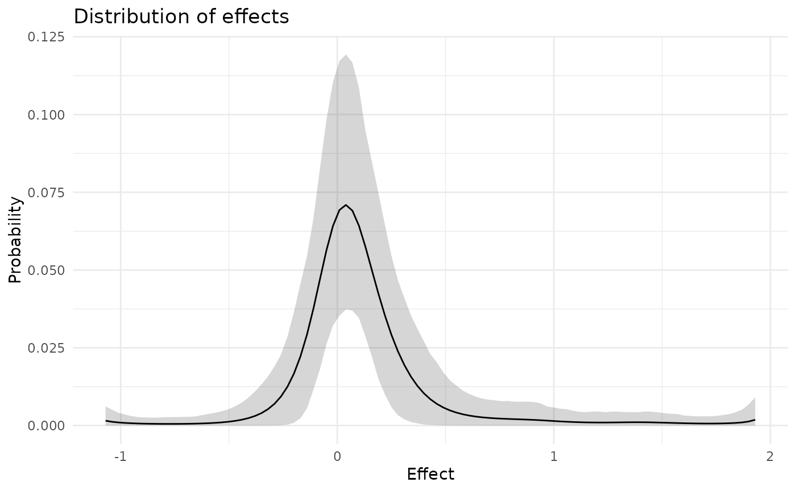
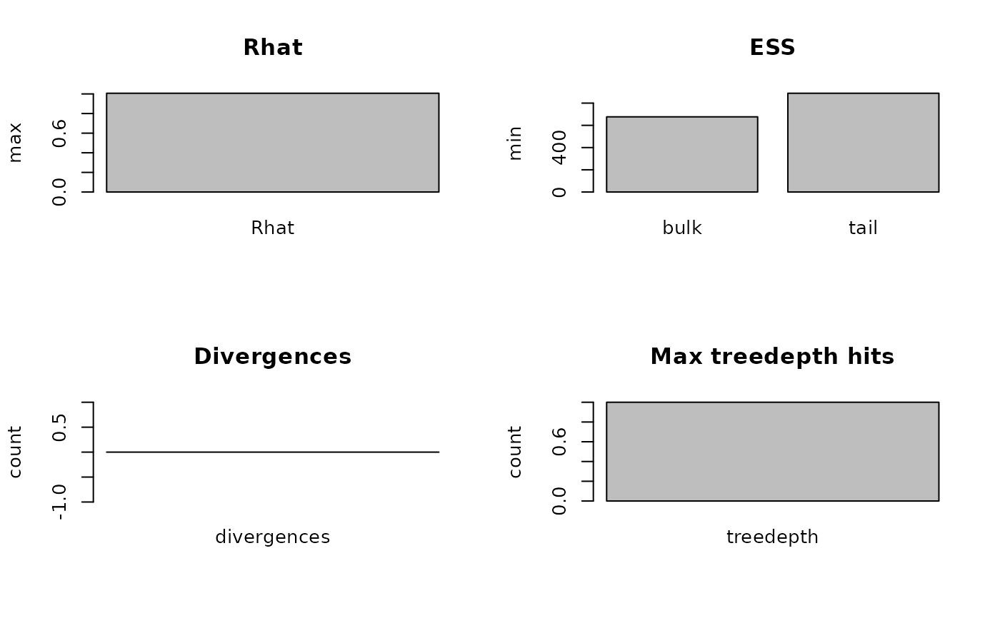
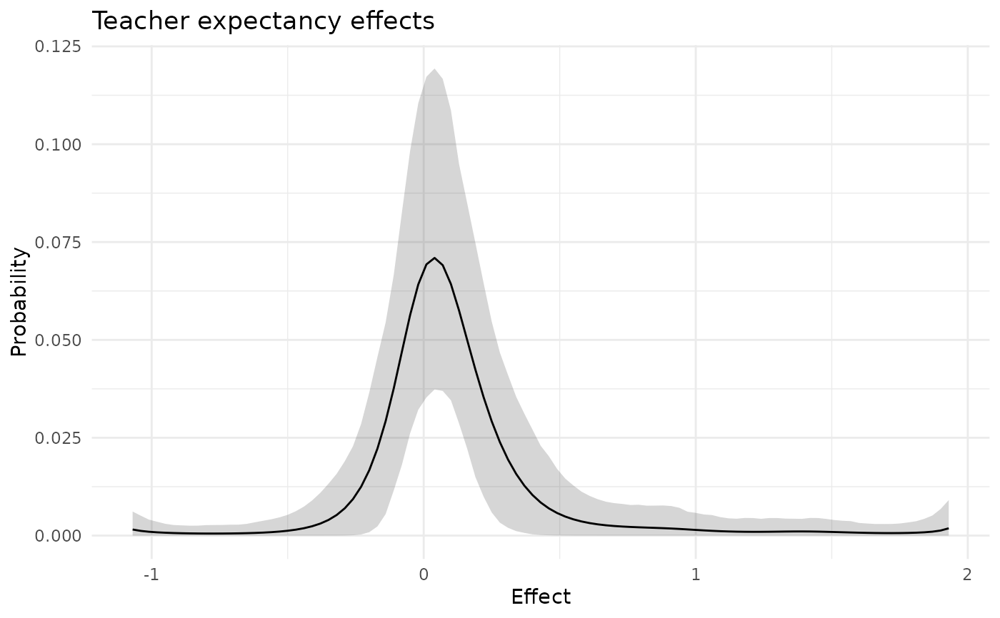
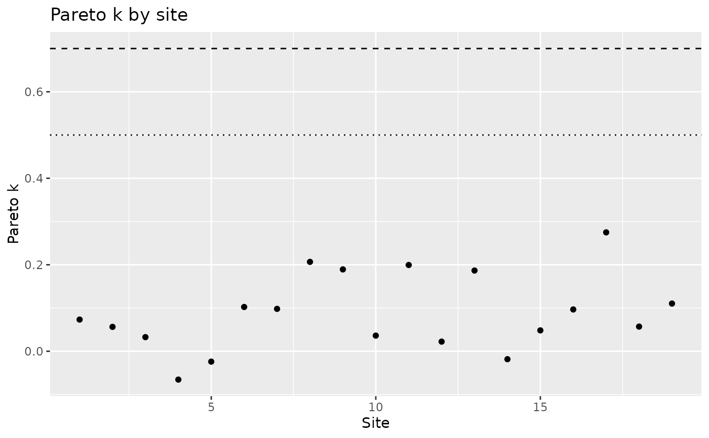

plot() draws one of four plots of a fitted model: the site effects
with their intervals, the estimated distribution of effects, the
convergence diagnostics, or the Pareto k values of leave-one-out
cross-validation.
Arguments
- x
A
bef_fit_reobject frombayes_efron_fit().- type
Character string, the plot to draw.
"caterpillar"(the default) shows for each site the posterior mean of \(\theta_i\), an interval of probabilitylevelas a thin line and the central 50% interval as a thick line; a dashed vertical line marks the posterior mean of the mean of \(g\)."g"shows the posterior mean of the probability that \(g\) gives to each grid point, with a pointwise band of probabilitylevel."diagnostic"shows the largest R-hat, the smallest bulk and tail effective sample sizes and the numbers of divergent transitions and of iterations at the maximum tree depth, asdiagnose()reports them; E-BFMI is not drawn."loo"shows the Pareto k value of each site fromloo.bef_fit(), with reference lines at 0.5 and 0.7; it needs the loo package.- level
Number between 0 and 1, the probability content of the intervals and of the band. Defaults to
0.9.- sort_by
Character string, the order of the sites in the caterpillar plot:
"mean"(the default) for the order of the posterior means,"sigma"for the order of the standard errors, or"none"for the order of the data.- ...
Not used.
- backend
Character string,
"ggplot2"or"base". If it is not given, ggplot2 is used when it is installed and base graphics otherwise.
Value
With ggplot2, a ggplot object, to which layers can be added.
With base graphics the plot is drawn and NULL is returned invisibly.
Examples
plot(raudenbush_fit)

plot(raudenbush_fit, sort_by = "sigma", level = 0.95)

plot(raudenbush_fit, type = "g")

plot(raudenbush_fit, type = "diagnostic", backend = "base")

# With ggplot2 the result can be extended.
p <- plot(raudenbush_fit, type = "g")
if (inherits(p, "ggplot")) {
p + ggplot2::labs(title = "Teacher expectancy effects")
}

plot(raudenbush_fit, type = "loo")
